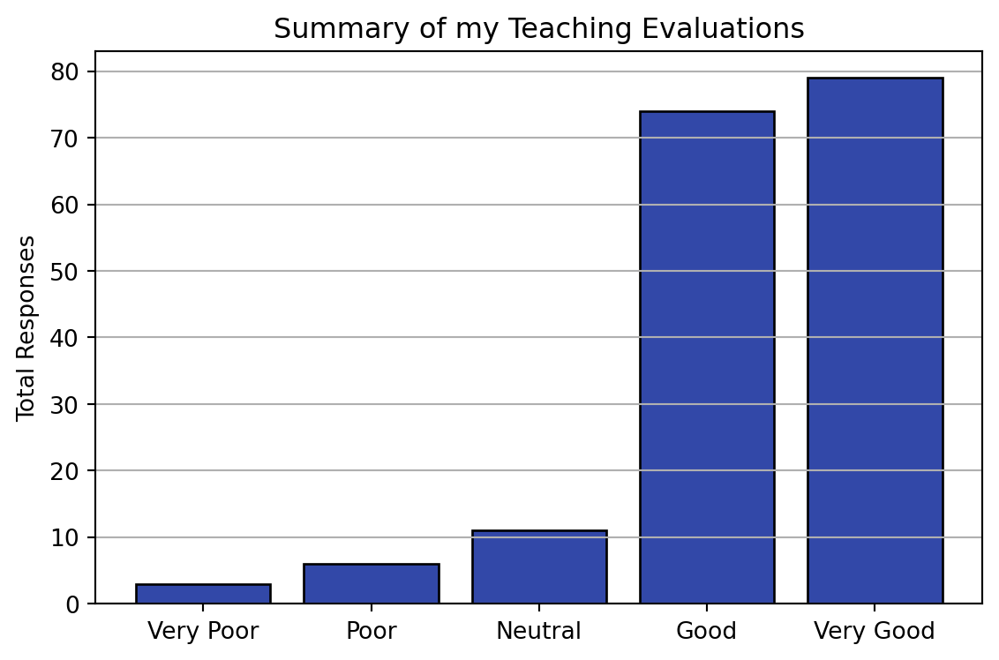

| Year | Term | Section | N | n | Very Poor | Poor | Neutral | Good | Very Good | Favorable | Response Rate |
|---|---|---|---|---|---|---|---|---|---|---|---|
| 2020 | S1 | 1 | 70 | 37 | 0 | 1 | 2 | 20 | 14 | 0.92 | 0.53 |
| 2020 | W2 | 201 | 76 | 27 | 0 | 0 | 2 | 11 | 14 | 0.93 | 0.36 |
| 2020 | W2 | 202 | 69 | 20 | 0 | 1 | 3 | 9 | 7 | 0.8 | 0.29 |
| 2021 | W1 | 101 | 97 | 41 | 2 | 3 | 2 | 19 | 15 | 0.83 | 0.42 |
| 2021 | W2 | 201 | 45 | 11 | 0 | 0 | 1 | 6 | 4 | 0.91 | 0.24 |
| 2022 | S1 | 1 | 33 | 4 | 0 | 0 | 0 | 0 | 4 | 1 | 0.12 |
| 2022 | W1 | 101 | 94 | 33 | 1 | 1 | 1 | 9 | 21 | 0.91 | 0.35 |
My Work
Here is some about the things I’ve been working on …
Teaching
I have published all of my course material for GEOS 270 as an Open Educational Resource (OER) on Github. The syllabus can be found here: https://geos270.github.io/Syllabus/. The course webpage has links to all of my course content, posted in an openly accessible format. All content for the term is hyperlinked in the schedule on the course overview page. I feel this is the most effective, transparent, and accessible way I can provide content for my students. I find the institutional tools provided by UBC (e.g., Canvas) to be severely lacking in functionality and an obvious barrier to accessibility. By using Github I can tailor my course webpage as I see fit, prospective students can review this syllabus and other content to see if they might be interested in the course, and students will continue to have access the course content even after they graduate!
I have years of experience teaching GOES 270, all of my available teaching evaluations are posted here. The wording of the evaluation questions has changed between terms, but one key question has not changed: Considering everything, how would you rate this course? The chart and table below summarize my student’s responses.
